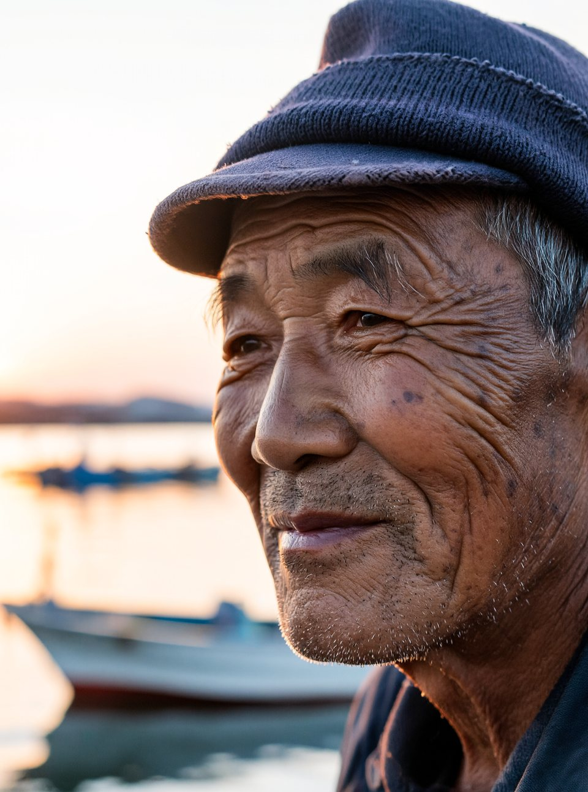

静止画をつくる・編集する
H3cApp v0.10.0から、動画と同じウィンドウで静止画もつくれます。プロンプトから1枚の画像をつくる、手元の画像を指示どおりに直す、できた画像をそのまま動画の最初の画像にする。どれもMacの中で行います。
生成例
このページの画像は、すべてAIで生成したものです（H3cAppの画像生成の処理で、P-H3-Imageを使用。Powered by MiniMax H3）。表示用にJPEGに縮小しています。
プロンプトから・1024×1024
8ステップ／シード1。生成時間 35秒（M5・24GB）
A yellow enamel teapot and a white cup on a blue wooden table, with a small handwritten sign that reads "OPEN" leaning against the teapot.

編集・左の画像を参照に・1024×1024
8ステップ／シード5。生成時間 2分17秒（M5・24GB）
Edit <Picture 1>. Replace the white cup with a small green ceramic bird. Keep the teapot, the sign and the table.

プロンプトから・特大（2496×3360、約8メガピクセル）
8ステップ／シード7。生成時間 3分58秒（M5・24GB）
A close-up portrait photograph by an experienced documentary photographer of an elderly Japanese fisherman on a harbor at dawn, his weathered face filling the frame, deep wrinkles, sun spots and stubble on his cheeks, a faded navy knit cap, soft side light from the low sun on the left, shallow depth of field.

特大の画像の一部（800×800を等倍で切り出し）
P-H3-Imageは8メガピクセルで最も良くなるモデルです。縮小せずに見ると、肌の細部まで描かれているのが分かります。
開発中に、v0.10.0と同じ処理をコマンドラインから実行してつくりました。同じプロンプトとシードでも、Macの機種や設定によって結果は変わることがあります。
2つの画像モデル
静止画には、動画とは別の画像モデルを使います。2つから選べ、両方を入れてパネルのモデルのメニューで切り替えることもできます。
| MiniMax H3 Image | P-H3-Image | |
|---|---|---|
| つくった人 | MiniMax | Pruna AI（MiniMax H3をもとにした画像用のモデル） |
| ダウンロード | 約22GB。テキストエンコーダは入っている動画モデルのものを使うので、先に動画モデルが必要です。 | 約29GB（動画モデルは不要）。動画モデルが入っていれば、そのDiTに付属のLoRAを当てる形で約10GBに減らせます（生成にはおよそ2倍の時間がかかります）。 |
| ステップ数 | 6 | 8 |
| 得意なこと | 速さと、多くの参照を使う編集 | 写真らしい質感。8メガピクセル（大きさの「特大」）で最も良くなります |
| 編集の参照 | 16枚まで（正方形の画像なら15枚まで） | 8枚まで |
| ライセンス | MiniMax-H3-Image Community License Agreement（動画モデルとは別の契約） | MiniMax H3 Community License Agreement（動画モデルと同じ） |
同じプロンプトでつくった画像を、静止画を見比べるで並べて見られます。高解像度化の方法ごとの違いもあります。
モデルを入れる
- パネル左上の切り替えで「画像」を選びます。動画側と画像側は、それぞれ自分のプロンプトと設定を持ちます。
- モデルのメニューから、入れるモデルを選びます。「画像モデルをダウンロード（MiniMax H3 Image）…」「画像モデルをダウンロード（P-H3-Image）…」「画像モデルをダウンロード（P-H3-Image、動画モデルを使う）…」の3つがあります。
- 表示されるライセンスの要点を確認して、ダウンロードを始めます。途中で止めても、次は続きから再開します。終わると、すべてのファイルを固定した版と照合してから登録します。
「モデル管理」の画像モデルの欄からも、同じダウンロードを始められます。
画像をつくる
- プロンプトを書きます。P-H3-Imageでは、「何の写真・絵か」を最初の一文で書き、場面を具体的に書くと良くなります。
- 形・大きさ・枚数を選びます。形は正方形・横長・縦長。大きさは「標準」（1024×1024や1344×768）、「大」（その2倍）、「特大」（約8メガピクセルの2912×2912や3808×2176）、「動画用」（動画と同じ大きさ）。枚数は1〜20枚です。
- 生成ボタンを押します。
- シード：パネル上部の「シード」で、毎回変えるか固定するかを選べます。固定すると、同じ設定で同じ画像ができます。複数枚をつくるときは、1枚目だけがそのシードを使います。
- 保存先：画像はプロジェクトの
imagesフォルダに、PNGと設定の記録（.json）、潜在ファイルの組で保存されます。PNGには、AIで生成したことを示すメタデータが入ります。「プロジェクトの動画と画像…」に、動画と一緒に並びます。 - 取り込む：「取り込む」で、手元の画像ファイルをプロジェクトの画像にできます（PNGに変換して保存します）。
画像を編集する
参照画像を渡し、どう変えるかをプロンプトで指示すると、直した画像ができます。同じ画像モデルが編集も行うので、追加のダウンロードは要りません。
- 編集する画像を選びます。プレビューか一覧で、画像の「この画像を編集」を押します。手元のファイルを使うときは、パネル上部の「参照画像を追加…」で選びます。
- 変えたいことと、残したいことを書きます。参照画像は
<Picture 1>のように番号で呼びます（参照の下の<Picture 1>を押すと、プロンプトに入ります）。
例：Edit <Picture 1>. Replace the white cup with a small green ceramic bird. Keep the teapot, the sign and the table. - 生成ボタンを押します。
- 複数の参照：参照は何枚か並べられます。番号は並び順で、右クリックで前後を入れ替えられます。例：
Edit <Picture 1>. Replace the cup with the bird from <Picture 2>.枚数が増えるほど時間とメモリが増えます。参照の下に、必要なメモリの目安が出ます。 - 大きさ：最初の参照を入れたとき、つくる画像の大きさをその画像の形に合わせます。あとから変えられます。P-H3-Imageでは、4〜8メガピクセル（最もよく編集できる範囲）に合わせます。
- 残したいものを書く：P-H3-Imageでは、指示の前に
Edit <Picture 1>.が自動で付きます。変えたい結果と、残したいもの（顔、姿勢、背景、光など）を書いてください。残すものを書かないと、全体を描き直しがちです。 - 記録：編集でつくった画像の記録には、もとにした画像が残ります。参照のファイルは、プロジェクトの
referencesフォルダにコピーされます。
画像から動画へ
画像の「この画像から動画を作る」を押すと、その画像を最初の画像にして動画の準備をします（動画のプロンプトが空なら、画像のプロンプトも入ります）。「その他」から、最後の画像や参照画像にもできます。思いどおりの1枚を静止画で決めてから動かせば、動画の最初の場面を何度も生成し直さずに済みます。
動画のつくり方は使い方の「画像から動画をつくる」にあります。
時間の目安
| つくるもの | MiniMax H3 Image | P-H3-Image |
|---|---|---|
| 1024×1024 | 約35秒 | 約35秒 |
| 2048×2048 | 約1分40秒 | 約1分50秒 |
| 2912×2912（特大） | — | 約4分 |
| 編集：参照1枚から1024×1024 | 約1分20秒 | 約2分20秒 |
| 編集：参照1枚から2048×2048 | 約2分40秒 | 約5分 |
ライセンス
- MiniMax H3 Image：MiniMax-H3-Image Community License Agreementが適用されます。動画モデルとは別の契約です。EU・英国・韓国・米国では、モデルもつくった画像も使えません。
- P-H3-Image：動画モデルと同じMiniMax H3 Community License Agreementが適用されます。このモデルを使った製品やサービスには「Powered by MiniMax H3」と表示します。
- どちらも、ダウンロードの前にアプリが要点とライセンス本文へのリンクを表示します。生成した画像を公開するときは、AIで生成したことを示してください（PNGのメタデータには、いつも記録します）。動画モデルのライセンスの要点はライセンスと利用条件にあります。
仕組みの詳細は、GitHubのGUIDE.ja.mdとTHIRD_PARTY_NOTICES.mdにあります。